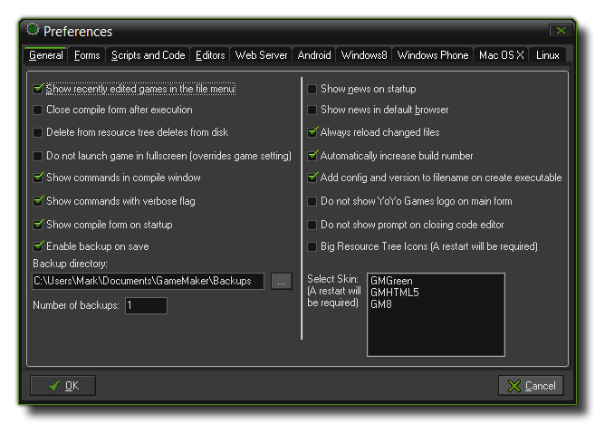

Preferences
The section details the preferences that customise the global features of GameMaker:Studio.
The drop down File in the main GameMaker:Studio window has an option marked Preferences. Selecting this will open the following window :  Here you can see, change and save a number of things related to how GameMaker:Studio looks and works, like the skin to use, any external editors you wish to link to as well as server information for testing your games and other internal preferences. The sections listed below outline the use of each of the available tabs, and in all cases if you press Okay will close the window and confirm all changes, while pressing Cancel will close the window without saving :
Back : Advanced Use Index
Next : Debugging